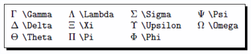
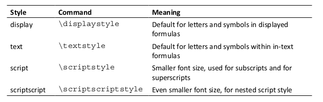
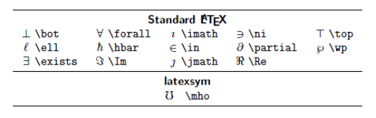

latex
Table of Contents
- 1. LaTeX
- 2. Getting Started with LaTeX
- 3. Formatting Words, Lines, and Paragraphs
- 3.1. Logical formatting
- 3.2. How LaTeX reads your input
- 3.3. Formatting text - fonts, shapes, and styles
- 3.4. Creating your own commands
- 3.5. Using boxes to limit the width of paragraphs
- 3.6. Breaking lines and paragraphs
- 3.7. Exploring the fine details
- 3.8. Setting accents
- 3.9. Justification
- 3.10. Displaying quotes
- 3.11. Summary
- 4. Designing Pages
- 5. Creating Lists
- 6. Creating Tables and Inserting Pictures
- 7. Cross Referencing
- 8. Listing Content and References
- 9. Typing Math Formulas
- 9.1. Writing basic formulas
- 9.1.1. Embedding math expressions within text
- 9.1.2. Dispalying formulas
- 9.1.3. Numbering equations
- 9.1.4. Adding substripts and superscirpts
- 9.1.5. Extracting roots
- 9.1.6. Writing fractions
- 9.1.7. Greek letters
- 9.1.8. Script letters
- 9.1.9. Producing an ellipsis
- 9.1.10. Changing the font style, and size
- 9.2. Customizing displayed formulas
- 9.3. Fine-tuning formulas
- 9.3.1. using operators
- 9.3.2. binary operation symbols
- 9.3.3. binary relation symbols
- 9.3.4. inequality relation symbols
- 9.3.5. subset and superset symbols
- 9.3.6. variable sized operators
- 9.3.7. arrows
- 9.3.8. harpoons
- 9.3.9. symbols derived from letters
- 9.3.10. variable sized delimiters
- 9.3.11. miscellaneous symbols
- 9.3.12. writing units
- 9.4. Building math structures
- 9.5. Stacking expressions
- 9.6. Writing theorems and definitions
- 9.1. Writing basic formulas
1 LaTeX
LaTeX is a high-quality open source typesetting software that produces professional prints and PDF files.
As LaTeX is a powerful and complex tool, getting started can be intimidating in 'timi deiting. But once you've become acquainted er 'kwein tid, LaTeX's capabilities far outweight any initial difficulties.
2 Getting Started with LaTeX
LaTeX is a document markup language. Just like HTML, Lilypond, XML
2.1 Separation of form and content
thought: abstract, separation
For example, instead of writing a chapter title in big bold letters, you just tell LaTeX that it's a chapter heading — you could let LaTeX design the heading or you decide in the document's settings what the headings will look like — just once for the whole document. (Just like HTML and CSS.)
2.2 LaTeX is portable
LaTeX is portable in three ways:
- source code: open source
- implementation: plain text
- output: PDF, DVI, PostScript, HTML
2.3 Protection for your work
Imagin the different word processor versions, it is difficult to maintain the compatibility.
Protection in two ways:
- compatibility: it is plain text.
- no viruses: it is plain text!
3 Formatting Words, Lines, and Paragraphs
3.1 Logical formatting
3.1.1 titling your document
\documentclass[a4paper,11pt]{article} \begin{document} \title{Example 2} \author{Mike Chyson} \date{Thu Jan 3 16:22:11 CST 2019} \maketitle \section{What's this?} This is our second document. It contains a title and a section with text. \end{document}
You do not specify the font size, font color, font family and so on.
Instead, you tell LaTeX it is a title, or author or date and so on.
LaTeX format them for you.
As if there is a logical layer between the appearance and the content.
3.1.2 document structure
A LaTeX document doesn't stand alone — commonly the document is based on a versatile template. Such a fundamental template is called a class. It provides customizable features, usually built for a certain purpose.
The first line starts with \documentclass . This word begins with a backslash; such a word is called a command.
We used commands to specify the class and to state document properties: title , author , and date .
This first part of the document is called the preamble of the document. This is where we choose the class, specify properties, and in general, make document-wide definitions.
\begin{document} marks the end of the preamble and the beginning of the actual document. \end{document} marks the end of the document. Everything that follows would be ignored by LaTeX.
Such a piece of code, framed by a \begin … \end command pair, is called an environment.
3.1.3 latex commands
LaTeX commands begin with a backslash, followed by big or small letters. Commands may have arguments, given in curly braces or in square brackets.
Calling a command looks like the following:
\command Or: \command{argument} Or: \command[optional argument]{argument}
3.2 How LaTeX reads your input
LaTeX treats multiple spaces just like a single space. Also, a single line break has the same effect like a single space. A blank line denotes a paragraph break. Like spaces, multiple empty lines are treated as one.
Briefly, spaces separate words, empty lines separate paragraphs.
3.2.1 comment
the percent sign (%) introduces a comment. (Same as Lilypond and Matlab comment.)
3.2.2 special symbols
Common text mostly contains upper and lowercase letters, digits, and punctuation characters. Some characters are reserved for LaTeX commands; they cannot be used directly.
By putting a backslash before such a special symbol, we turned it into a LaTeX command. This command has the only purpose of printing out that symbol.
Convention in almost all programming language.
Note:
The command for printing a backslash is \textbackslash. \\ is used as a shortcut for a line break command. That's a bit odd, but line breaks occur frequently whereas backslashes are rarely needed in the output, therefore this shortcut has been chosen.
3.3 Formatting text - fonts, shapes, and styles
3.3.1 tuning the font shape
\documentclass{article} \begin{document} Text can be \emph{emphasized}. Besides being \textit{italic} words could be \textbf{bold}, \textsl{slanted} or typeset in \textsc{Small Caps}. Such commands can be \textit{\textbf{nested}}. \emph{See how \emph{emphasizing} looks when nested.} \end{document}
Text-formatting commands usually look like \text**{argument} , where ** stands for a two letter abbreviation like bf for bold face, it for italic, and sl for slanted.
Most font commands will show the same effect if they are applied twice like \textbf{\textbf{words}} : the words won't become bolder.
Only \emph behaves differently. \emph is so called semantic markup, because it refers to the meaning, not just to the appearance of text.
3.3.2 switch fonts
The best place for downloading LaTeX related software is CTAN. Its address is \ttfamily http://www.ctan.org\rmfamily.
We used the command \ttfamily to switch to a typewriter font. The typewriter font will be used from this point onwards. By using \rmfamily , we returned to Roman font.
These commands don't produce any output, but they will affect the following text. We call such a command a declaration.
3.3.3 delimiting the effect of commands (group: {})
In the previous example, we've reversed the effect of \ttfamily by writing \rmfamily .
To be safe, we could write \normalfont to switch back to the base font.
However, there's an easier way.
\documentclass{article} \begin{document} {\sffamily Text can be {\em emphasized}. Besides being {\itshape italic} words could be {\bfseries bold}, {\slshape slanted} or typeset in {\scshape Small Caps}. Such commands can be {\itshape\bfseries nested}. } {\em See how {\em emphasizing} looks when nested. } \end{document}
An opening curly brace tells LaTeX to begin a so called group. The following commands are valid for the subsequent text until a closing curly brace appears causing LaTeX to stop using the commands or declarations written in this group.
Till a command is valid, that's called its scope.
3.3.4 font size
\documentclass{article} \begin{document} \noindent\tiny We \scriptsize start \footnotesize \small small, \normalsize get \large big \Large and \LARGE bigger, \huge huge and \Huge gigantic! \end{document}
There are no corresponding commands taking arguments.
The actual resulting font size depends on the base font. If your document has a base font of 12 pt, then \tiny would result in text bigger than with a base font of 10 pt.
Normally, font size declarations are used only in definitions of macros in the preamble, just as it does apply to the other font commands.
3.3.5 environments
It is difficult to recognize the brace matching when the curly braces grow up.
An environment forms a group. Using an environment instead of just curly braces improves the readability of your code.
{\huge This is a very long example.}
is same to
\begin{huge}
This is a very long example.
\end{huge}
For every declaration there's a corresponding environment carrying the same name except the backslash.
3.4 Creating your own commands
3.4.1 creating command
LaTeX allows you to define your own commands in your preamble. They are also called macros.
\documentclass{article} \newcommand{\TUG}{TeX Users Group} \begin{document} \section{The \TUG} The \TUG\ is an organization for people who are interested in \TeX\ or \LaTeX. \end{document}
\newcommand defines a new command. The first argument is the name of the command. The second argument is the content of the command.
Note:
We have to use a backslash after \TUG . The following space would just separate the command from the following text; it won't produce a space in the output. Using the backslash followed by a space forces the output of the space that would otherwise be ignored.
3.4.2 adding intelligent spacing
A backslash following a command could easily be forgotten. Can't we modify the command in order to automate that? Tasks like this, which aren't supported by LaTeX directly, could be solved by using packages. The package xspace is to fulfill this need.
\usepackage{xspace} \newcommand{\TUG}{\textsc{TeX Users Group}\xspace}
\usepackage{xspace} tells LaTeX to load the package called xspace and to read in all of its definitions.
This package provides the command \xspace that inserts a space depending on the following character:
If a dot, a comma, an exclamation, or a quotation mark follows, it won't insert a space, but if a normal letter follows, then it will.
3.4.3 creating your own commands with arguments
Imagine that your text contains a lot of keywords that you want to be printed in bold.
If you use the \textbf{} command on all the keywords, what would happen if you later decide to use an italic shape instead or a typewriter font?
You would have to change that formatting for each keyword. There's a better way: defining your own macro and using \textbf{} only inside that.
\documentclass{article} \newcommand{\keyword}[1]{\textbf{#1}} \begin{document} \keyword{Grouping} by curly braces limits the \keyword{scope} of \keyword{declarations}. \end{document}
The number 1 in the square brackets marks the number of arguments. #1 will be replaced by the value of the first argument. #2 would refer to a second argument, and so on.
3.4.4 command with optional arguments
\documentclass{article} \newcommand{\keyword}[2][\bfseries]{{#1#2}} \begin{document} \keyword{Grouping} by curly braces limits the \keyword{scope} of \keyword[\itshape]{declarations}. \end{document}
By using [\bfseries] , we introduced an optional parameter. We refer to it with #1 . Its default value is \bfseries . Since we used a declaration this time, we added a pair of braces to ensure that only the keyword is affected by the declaration.
definition:
\newcommand{command}[arguments][optional]{definition}
| PARAMETER | MEANING |
|---|---|
| command | The name of the new command |
| arguments | An integer from 1 to 9, the number of the arguments of the new command |
| optional | If present, the first of the arguments would be optional with a default value given here |
| defintion | Every occurrence of the command will be replaced by definition and every occurrence of the form #n will then be replaced by the nth argument. |
\newcommand is our key to introduce logical formatting. We should avoid using LaTeX font commands inside the document - you are on the right track if they appear only in the preamble of the document.
3.5 Using boxes to limit the width of paragraphs
3.5.1 creating a narrow text column
\parbox[alignment][height][inner alignment]{width}{text}
3.5.2 boxes containing more text
Parboxes are suitable for boxes with only a little text inside. In case of a box containing a large amount of text, the closing brace could easily be forgotten or overlooked. The minipage environment would then be a better choice.
\documentclass{article} \begin{document} \begin{minipage}{3cm} TUG is an acronym. It means \TeX\ Users Group. \end{minipage} \end{document}
3.5.3 understanding environments
LaTeX environments are started with \begin and ended with \end . Both commands require the name of the environment as their argument.
\begin{name} ... \end{name}
Such environments can be used for each declaration called \name.
Like commands, environments may also have arguments.
\begin{name}{arguement} ... \end{name}
\begin{name}[optional arguement]{arguement} ... \end{name}
Environments are like declarations with a built-in scope. With \begin , the environment introduces a change in layout, font, or other properties. There must be an \end command, where this change will be canceled. The effect of the environment name is delimited to the piece of code between \begin{name} and \end{name} .
3.6 Breaking lines and paragraphs
3.6.1 stating devision points
The \hyphenation command tells LaTeX where the division points of a word may be. Its argument may contain several words separated by spaces. For each word, we can indicate several points.
\hyphenation{ac-ro-nym ac-ro-nym-ic a-cro-nym-i-cal-ly}
Preventing hyphenation
If you want to prevent the hyphenation of a certain word at all, there are two
ways: either declare it in the preamble by using it in the \hyphenation
argument without any division points, like \hyphenation{indivisible},
or you protect it inside the text using the \mbox command: The following
word is \mbox{indivisible}.
3.6.2 improving the justification further
When we typeset directly to PDF, we're actually using pdfLaTeX and we can benefit from the new features by using the microtype package.
3.6.3 breaking lines manually
\\ % end a line \newline % has the same effect with \\ \linebreak % tells LaTeX to end the line but to keep the full justification.
\\[value] would insert additional vertical space after the break depending on the value , like \\[3mm] . \\*[value] is a variation of the same but prevents a page break before the next line of text. \linebreak[number] can be used to influence the line break slightly or strongly: If number is 0, a line break is allowed, 1 means it's desired, 2 and 3 mark more insistent requests, and 4 will force it. The latter is the default behavior if no number was given.
3.6.4 preventing line breaks
The command \linebreak has a direct counterpart: \nolinebreak . This command prevents a line break at the current position. Like its counterpart, it takes an optional argument. If you write \nolinebreak[0] , you recommend to not break the line there. Using 1, 2, or even 3 makes the request stronger and \nolinebreak[4] forbids it completely. The latter will be presumed if you don't provide an argument.
The already mentioned command, \mbox[text] , does not only disable hyphenation of a word, it will also prevent a line break for the complete text .
The symbol ~ stands for an interword space where no break is allowed: if you would write Dr.~Watson , the title Dr. would never stand lonely at the end of a line.
3.6.5 managing line breaks wisely
Bad hyphenation could still disappear as the document grows, so stating some sensible hyphenation rules would not do any harm but could prove to be useful.
But only use \\ , \newline , and \linebreak for line adjustment when you're working on the final version of your document! While you're still editing your text, you don't need to worry about line breaks. They still may change during the writing process. Bad looking justification could still change and become better without intervention. On the other hand, if you break a line manually but later insert text before, the result could be an unwanted short line.
So don't waste your energy on formatting while you're writing.
3.7 Exploring the fine details
Typographic conventions may require paying attention to small details; there are different dashes, and the space around a dot may vary depending on the context. The space after some letters may depend on the following one, so much so that some letters may even be joined to a single one. Such constructions are called ligatures.
3.7.1 understanding ligatures
If the letter i follows the letter f, the dot of the letter i could collide with the head of the f. It could be avoided in two ways: either by increasing the space between those two letters or by combining them. The latter will result in a ligature. This will automatically be done by LaTeX when the used font provides such ligatures.
Sometimes this behavior might be undesirable, for instance, in compound words like "halflife". In this case, you can suppress this behavior by inserting \/ getting half\/life.
Curly braces can be used to achieve the same effect. For instance, in -{}- and {-}{-} , the dashes cannot be joined because this would cross group boundaries.
3.7.2 setting dots
\documentclass{article} %\frenchspacing % the spacing after sentences will be as it is between words. \begin{document} \TeX\ was designed by Donald E. Knuth. It has become a de facto standard in mathematics. Look at the spacing etc. in LaTeX. See it? Look at the spacing etc.\ in LaTeX\@. See it? %% the backslash followed by a space (a "quoted space") produces the %% normal interword space, the \@ before the dot states that the following dot stands at the %% end of a sentence. \end{document}
3.7.3 comparing dots to ellipsis
\documentclass{article} \begin{document} Here are three dots... compare them to the ellipsis\ldots \end{document}
3.8 Setting accents
3.8.1 accents
\documentclass{article} \begin{document} N\~{a}o compreendo. H\'{a} aqui algu\'{e}mque fale ingl\^{e}s? Comment \c{c}a va? O\`{u} se trouve l'a\'{e}roport? \end{document}
3.8.2 using accents directly
\documentclass{article} \usepackage[utf8]{inputenc} \begin{document} Não compreendo. Há aqui alguém que fale inglês? Comment çava? Où se trouve l'aéroport? \end{document}
3.9 Justification
3.9.1 justifying a paragraph to the left
\documentclass{article} \begin{document} \parbox{3cm}{\raggedright TUG is an acronym. It means \TeX\ Users Group.} \end{document}
3.9.2 centering a title
\documentclass{article} \pagestyle{empty} \begin{document} {\centering \huge\bfseries Centered text \\ \Large\normalfont written by me \\ \normalsize\today } \end{document}
3.9.3 using environments for justification
\documentclass{article} \usepackage{url} \begin{document} \noindent This is the beginning of a poem by Edgar Allan Poe: \begin{center} \emph{Annabel Lee} \end{center} \begin{center} It was many and many a year ago,\\ In a kingdom by the sea,\\ That a maiden there lived whom you may know\\ By the name of Annabel Lee \end{center} The complete poem can be read on \url{http://www.online-literature.com/poe/576/}. \end{document}
The corresponding environment for ragged-right text is called flushleft, and for ragged-left text it's flushright.
\begin{flushleft} \end{flushleft} \begin{flushright} \end{flushright}
3.10 Displaying quotes
3.10.1 quoting a scientist
``'' \begin{quote} \end{quote}
\documentclass{article} \begin{document} Niels Bohr said: ``An expert is a person who has made all the mistakes that can be made in a very narrow field.'' Albert Einstein said: \begin{quote} Anyone who has never made a mistake has never tried anything new. \end{quote} Errors are inevitable. So, let's be brave trying something new. \end{document}
3.10.2 quoting longer text
\begin{quotation} \end{quotation}
\documentclass{article} \usepackage{url} \begin{document} The authors of the CTAN team listed ten good reasons for using \TeX. Among them are: \begin{quotation} \TeX\ has the best output. What you end with, the symbols on the page, is as useable, and beautiful, as a non-professional can produce. \TeX\ knows typesetting. As those plain text samples show, \TeX's has more sophisticated typographical algorithms such as those for making paragraphs and for hyphenating. \TeX\ is fast. On today's machines \TeX\ is very fast. It is easy on memory and disk space, too. \TeX\ is stable. It is in wide use, with a long history. It has been tested by millions of users, on demanding input. It will never eat your document. Never. \end{quotation} The original text can be found on \url{ http://www.ctan.org/what_is_tex.html}. \end{document}
3.10.3 spacing between paragraphs instead of indentation
\documentclass{article} \usepackage{parskip} \usepackage{url} \begin{document} The authors of the CTAN team listed ten good reasons for using \TeX. Among them are: \TeX\ has the best output. What you end with, the symbols on the page, is as useable, and beautiful, as a non-professional can produce\ldots The original text can be found on \url{ http://www.ctan.org/what_is_tex.html}. \end{document}
3.11 Summary
You should use formatting commands inside command definitions in the preamble to allow easy changes for the future.
As often as possible, create your own macros to achieve a logical structure.
4 Designing Pages
4.1 Defining the overall layout
\usepackage[a4paper, inner=1.5cm, outer=3cm, top=2cm, bottom=3cm, bindingoffset=1cm, landscape]{geometry} %% paper=name %% paperwidth=7in %% paperheight=10in %% papersize={7in,10in} %% landscape %% portrait %% textwidth=140mm %% textheight=180mm %% lines=25 %% includedhead % cause the header of the page to be included into the body area %% includefoot %% left=2cm %% right=2cm %% bindingoffset % reserves space on the left margin (one-size), respectively the inner margin (two-sided) for the binding %% default margin ratio: %% top:bottom = 2:3 %% left:right = 1:1 for one-side documents %% inner:outer = 2:3 for two-side documents
\usepackage[onehalfspacing]{setspace} %% singlespacing, onehalfspacing, doublespacing %% \begin{spacing}{2.4} %% This text is stretched by a factor of 2.4. %% \end{spacing}
4.1.1 get document help
- texdoc <package-name>
- http://ctan.org/pkg
- http://texcatalogue.sarovar.org/bytopic.html
4.1.2 locate tex source file
A package filename usually ends with .sty , standing for style file.
kpsewhich setspace.sty
4.2 Using class options to configure the document style
\documentclass[a4paper,12pt,twocolumn]{book} % the document class book, suitable for book-like documents %% book, report, article, slides, letter %% oneside or twoside %% openright or openany % only support book and report %% titlepage or notitlepage %% final or draft: If draft is set, then LaTeX will mark overfull lines with a black box, which is helpful in reviewing and improving the output. %% openbib : When this option is set, a bibliography would be formatted in open style instead of compressed style. %% fleqn : Causes displayed formulas to be left-aligned. %% leqno : For numbered displayed formulas, the number would be put to the left side. The right side is the default.
4.3 Creating a table of contents
\tableofcontents \chapter \section \subsection \subsubsection
4.4 Designing headers and footers
\usepackage{fancyhdr} \fancyhf{} \fancyhead[LE]{\leftmark} \fancyhead[RO]{\nouppercase{\rightmark}} \fancyfoot[LE,RO]{\thepage} \pagestyle{fancy}
4.4.1 page styles
LaTeX and its base classes provide four page styles:
empty : Neither a header nor a footer is shown.
plain : No header. The page number will be printed and centered in the footer.
headings : The header contains titles of chapters, sections, and/or subsections,
depending on the class and also the page number. The footer is empty.
myheadings : The header contains a user-defined text and the page number;
the footer is empty.
fancyhdr adds one page style:
fancy : Both the header and footer may be customized by the user.
Two commands may be used to choose the page style:
\pagestyle{name} : Switches to the page style name from this point onwards.
\thispagestyle{name} : Chooses the page style name only or the current page;
the following pages will have the style that's been used before.
4.4.2 customizing header and footer
\lhead % left head \chead % center head \rhead % right head \lfoot \cfoot \rfoot
\fancyhead[code]{text} \fancyfoot[code]{text} % code: L:left C:center R:right E:even O:odd H:header F:footer
4.4.3 using decorative lines in header or footer
We can introduce or delete lines between header and body text and body text and footer, respectively, with these two commands:
\renewcommand{\headrulewidth}{width} \renewcommand{\footrulewidth}{width}
\renewcommand works exactly like \newcommand , except that the command must already exist.
4.5 Breaking pages
\pagebreak \newpage \nopagebreak % compare to \linebreak \newline \nolinebreak
\raggedbottom \flushbottom
4.6 Enlarging a page
\enlargethispage{2\baselineskip} % baselineskip return the height of a text line
4.7 Using footnotes
\footnote{hello world} \section[title without footnote]{This is a section\protect\footnote{section footnote}} \footnote[number]{text} \footnotemark[number] % produces a superscripted number in the text as a % footnote mark. If the optional argument wasn't given, it's also stepping and using % the internal footnote counter. No footnote will be generated. \footnotetext[number]{text} % generates a footnote without putting a % footnote mark into the text without stepping the internal footnote counter. \footnoterule % used to alter the footnote line \renewcommand{\footnoterule}{\noindent\smash{\rule[3pt]{\textwidth}{0.4pt}}} % \rule[raising]{width}{height} draws a line, here 0.4 pt thick, and as wide as the text, raised a bit by 3 pt. % \smash , let the line pretend to have a height and a depth of zero, so it's occupying no vertical space at all.
5 Creating Lists
5.1 Building a bulleted list
\begin{itemize} \item geometry \item amsmath \end{itemize}
5.2 Creating a numbered list
\begin{enumerate} \item geometry \item amsmath \end{enumerate}
5.3 Customizing lists
\usepackage{paralist} \begin{compactenum} \item \end{compactenum} \begin{compactitem} \item \end{compactitem}
For each standard environment, paralist adds three corresponding environments: Numbered lists:
- compactenum: Compact version of the enumerate environment without any vertical space before or after the list or its items
- inparaenum: An enumerated list typeset within a paragraph
- asparaenum: Every list item is formatted like a separate common LaTeX paragraph, but numbered
Bulleted lists:
- compactitem: Compact version of the itemize environment like compactenum
- inparaitem: An itemized list typeset within a paragraph, rarely seen in print
- asparaitem: Like asparaenum, but with symbols instead of numbers
To follow language specific habits or certain requirements, we might wish to enumerate by Roman numbers or alphabetically; parentheses or dots might be required. Some may prefer dashes instead of bullets. The package enumitem provides sophisticated features to implement such requirements.
5.4 Producing a definition list
\begin{description} \item[paralist] provides compact lists and list versions that can be used within paragraphs, helps to customize labels and layout \item[enumitem] gives control over labels and lengths in all kind of lists \item[mdwlist] is useful to customize description lists, it even allows multi-line labels. It features compact lists and the capability to suspend and resume. \item[desclist] offers more flexibility in definition list \item[multenum] produces vertical enumeration in multiple columns \end{description}
6 Creating Tables and Inserting Pictures
6.1 Writing in columns
\documentclass{article} \begin{document} \begin{tabbing} \emph{Info:} \= Software \= : \= \LaTeX \\ % set tab stops by \= \> Author \> : \> Leslie Lamport \\ % move to the next tab stop by \> \> Website \> : \> www.latex-project.org \end{tabbing} \end{document}
6.2 Typesetting tables
\documentclass{article} \newcommand{\head}[1]{\textnormal{\textbf{#1}}} \begin{document} \begin{tabular}{ccc} \hline \head{Command} & \head{Declaration} & \head{Output} \\ \hline \verb|\textrm| & \verb|\rmfamily| & \rmfamily Example text \\ \verb|\textsf| & \verb|\sffamily| & \sffamily Example text \\ \verb|\texttt| & \verb|\ttfamily| & \ttfamily Example text \\ \hline \end{tabular} \end{document}
- \hline draws a horizontal line over the whole width of the table
- \cline{m-n} draws a horizontal line starting at the beginning of column m and ending at the end of column n
- \vline draws a vertical line over the full height and depth of the current row
\documentclass{article} \newcommand{\head}[1]{\textnormal{\textbf{#1}}} \usepackage{booktabs} % \begin{document} \begin{tabular}{ccc} \toprule[1.5pt] % British typesetters call a line a rule \head{Command} & \head{Declaration}& \head{Output}\\ \midrule % \verb|\textrm| & \verb|\rmfamily| & \rmfamily Example text \\ \verb|\textsf| & \verb|\sffamily| & \sffamily Example text \\ \verb|\texttt| & \verb|\ttfamily| & \ttfamily Example text \\ \bottomrule[1.5pt] % \end{tabular} \end{document}
Columns concerning the same subject might be grouped by a common header. In such a case, two cells in the header should be merged. The command \multicolumn does it for us.
6.3 Inserting pictures
\documentclass[a5paper]{article} \usepackage[english]{babel} \usepackage{blindtext} \usepackage{graphicx} \pagestyle{empty} \begin{document} \section{Including a picture} \blindtext \begin{figure} \centering \includegraphics{dinosaur} \includegraphics{/home/hack/Pictures/bim_edge.png} % \includegraphics[key=value list]{file name} \caption{Test figure} \end{figure} \blindtext \end{document}
6.4 Managing floating environment
6.4.1 understanding float placement options
When a page break occurs, normal text can be broken to continue on the next page. However, pictures cannot be divided. Simple tables cannot be split either. That's why LaTeX provides two floating environments, namely, figure and table.
begin{figure}[ht]
% h stands for here. The float may appear where it's been written in the source code.
% t stands for top. Placing at the top of a page is permitted.
% b stands for bottom. The float may appear at the bottom of a page.
% p stands for page. The float is allowed to appear on a separate page, where only floats may reside but no normal text.
% ! tells LaTeX to try harder! Some constraints may be ignored, easing the placement.
6.4.2 limiting floating
If you would like to stop LaTeX from putting the floats, there's a way; the \clearpage command ends the current page and causes all already defined figures and tables to be printed out. You can use \cleardoublepage that does the same but in a two-sided layout it ensures that the next non-float page is a right-hand page.
6.4.3 avoiding floating at all
\documentclass{article} \usepackage{capt-of} % or caption \usepackage[demo]{graphicx} \begin{document} \begin{center} \begin{minipage}{1.0\linewidth} \centering \includegraphics{dinosaur} \captionof{figure}{Test fugure} \end{minipage} \end{center} \end{document}
6.4.4 float around figure
% \begin{wrapfigure}[number of lines]{placement}[overhang] {width} \begin{wrapfigure}{l}{4.4cm} % \includegraphics[width=4.4cm]{test} \caption{Test figure} \end{wrapfigure}
6.4.5 breaking firues and tables into pieces
For grouping several sub figures or sub tables with captions within a single figure or table, there are several supporting packages you can choose from:
- subfig is a sophisticated package supporting inclusion of small figures and tables. It takes care of positioning, labeling, and captioning within single floats.
- subcaption is another package for this purpose and belongs to the caption package.
- subfigure is still available, but considered as obsolete since subfig has appeared.
7 Cross Referencing
7.1 Setting labels and referencing
\label % mark the label \ref % refer after marking \pageref % notice, typeset twice to produce the corrent reference % If the \label command appeared in ordinary text, then the current sectional unit, % like the chapter or the section, would be assigned. % If the \label would be placed within a numbered environment, that environment % would be assigned to the key. \newcommand{\fullref}[1]{\ref{#1} on page~\pageref{#1}}
7.2 Producing intelligent page references
We will use the varioref commands, \vref and \vpageref , to achieve enhanced reference texts.
see the figure \vpageref[above]{fig:name} % "see the figure above" if the figure is on the same page % "see the figure on the page before" if the figure is on the preceding page see the footnote \vpageref[below]{fn:name} % "see the footnote below" if the footnote is on the same page % "see the footnote on the following page" if the footnote is on the next page see the figure \vpageref[above figure][figure]{fig:name} % "see the above figure" if the figure is on the same page % "see the figure on the page before" if the figure is on the preceding page
varioref offers two more commands:
\vpagerefrange[opt]{key1}{key2}, where key1 and key2 denote a range (like a sequence of figures from fig:a to fig:c ). If both labels fall onto the same page, the result is the same as with \vpageref . Otherwise, the output will be a range like "on pages 32-36". opt would be used if both labels fall onto the current page.
\vpageref [opt]{key1}{key2}is analogous, but similar to \vref : see figures \vpageref{fig:a}{fig:c} may result in "see figures 4.2 to 4.4 on pages 36-37".
If you write several related documents that refer to each other, you might want to use references to labels of another document. The package with the short name xr (standing for eXternal References) implements it.
\usepackage{xr} \externaldocument{doc} % if doc.tex is refered to \externaldocument[D-]{doc} % to avoid label name conflict with the label in the main document % \ref{D-name} to refer to the name in doc.tex
\usepackage{hyperref} % wonderful
8 Listing Content and References
8.1 Customizing the table of contents
\documentclass{book} \usepackage{hyperref} \setcounter{tocdepth}{3} % table of content depth, absolute depth \begin{document} \tableofcontents{} \part{First part} \chapter*{Preface} \addcontentsline{toc}{chapter}{Preface} \chapter{First main chapter} \section{A section} \section{Another section} \subsection{A smaller section} \subsubsection[Deeper level]{This section has an even deeper level} \chapter{Second main chapter} \part{Second part} \chapter{Third main chapter} \appendix{} \cleardoublepage{} \addtocontents{toc}{\bigskip{}} \addcontentsline{toc}{part}{Appendix} \chapter{Glossary} \chapter{Symbols} \end{document}
| Command | Level |
|---|---|
| \part | -1 (book and report class) |
| \chapter | 0 (not available in article class) |
| \section | 1 |
| \subsection | 2 |
| \subsubsection | 3 |
| \paragraph | 4 |
| subparagraph | 5 |
8.2 Customizing list of figure and table
\documentclass{book} \renewcommand{\figurename}{Diagram} % default: Figure \renewcommand{\listfigurename}{List of Diagrams} % default: List of Figures \renewcommand{\tablename}{LaTex} \renewcommand{\listtablename}{List of LaTex} \usepackage{hyperref} \setcounter{tocdepth}{3} % table of content depth % \setcounter{name}{n} % \addtocounter{name}{n} % \addtocounter{tocdepth}{1} % relative depth \begin{document} \tableofcontents \listoffigures \listoftables \part{First part} \chapter*{Preface} % don't produce a TOC entry, do not count this \addcontentsline{toc}{chapter}{Preface} % add Preface manually % \addcontentsline{file extension}{sectional unit}{text} % toc for the table of content file % lof for the list of figures file % lot for the list of tables file % Specify chapter to create an entry that's formatted like normal chapter entries \chapter{First main chapter} \begin{figure} \centering \fbox{Diagram placeholder} \caption{Enterprize Organizational Chart} \end{figure} \section{A section} \section{Another section} \subsection{A smaller section} \subsubsection[Deeper level]{This section has an even deeper level} % shorter entry in TOC \chapter{Second main chapter} \part{Second part} \chapter{Third main chapter} \addtocontents{lof}{Network Diagram} \begin{figure} \centering \fbox{Diagram placeholder} \caption{Network overview} \end{figure} \begin{table} \centering{} \fbox{Table placeholder} \caption{test} \end{table} \begin{figure} \centering{} \fbox{Diagram placeholder} \caption{WLAN Design} \end{figure} \appendix{} \cleardoublepage{} \addtocontents{toc}{\bigskip{}} % \addtocontents{file extension}{entry} % In contrary to \addcontentsline , the argument entry is written directly to the file % without any additional formatting. You may choose any formatting you like. % 1. \addtocontents{toc}{\protect\enlargethispage{\baselineskip}} % extends the text height such that one additional line fits to the contents page. % 2. \addtocontents{toc}{\protect\newpage} causes a page break in the TOC. % For instance, if the automatic page break happens after a chapter entry and before % the following section entries, you might wish to force a page break already before % the chapter entry. % 3. \addtocontents{toc}{\protect\thispagestyle{fancy}} changes the % page style of the current TOC page to fancy. As the first page of a chapter is of % plain style by default, the first page of the TOC would be plain as well, even if you % specified \pagestyle{fancy} . This command overrides it. \addcontentsline{toc}{part}{Appendix} \chapter{Glossary} \chapter{Symbols} \end{document}
tocloftgives extensive control over the typography of TOC, LOF, and LOT. You may even define new kinds of such lists.
titletocoffers convenient handling of entries and is the companion to titlesec, a very good package for customizing sectioning headings.
multitocoffers a layout in two or more columns using the multicol package.
minitoccan create small TOCs for each part, chapter, or section.
tocbibindcan automatically add bibliography, index, TOC, LOF, and LOT to the table of contents. It's even capable of using numbered headings instead of the default unnumbered ones.
9 Typing Math Formulas
9.1 Writing basic formulas
LaTeX knows three genral modes:
- paragraph mode: The text is typeset as a sequence of words in lines, paragraphs, and pages.
- left-to-right mode: The text is also considered to be a sequence of words, but LaTeX typesets it from left to right without breaking the line.
- math mode: Letters are treated as math symbols.
\documentclass{article} \begin{document} \section*{Quadratic equations} \begin{equation} \label{quad} ax^2 + bx + c = 0, \end{equation} where \( a, b\) and \( c \) are constants and \( a \neq 0 \), has two solutions for the variable \( x \): \begin{equation} \label{root} x_{1,2} = \frac{-b \pm \sqrt{b^2 -4ac}}{2a}. \end{equation} If the \emph{discriminant} \( \Detla \) with \[ \Delta = b^2 - 4ac \] is zero, then the equation (\ref{quad}) has a double solution: (\ref{root}) becomes \[ x = - \frac{b}{2a}. \] \end{document}
9.1.1 Embedding math expressions within text
LaTeX provides the math environment in-text formulas:
\begin{math} expression \end{math}
Since it's very laborious to write this environment for each small expression or symbol, LaTeX offers an alias that's doing the same:
\( expression \)
You may write it without line breaks, such as:
\( expression \)
A third way is by using a shortcut, coming from TeX:
$expression$
9.1.2 Dispalying formulas
For displayed formulas, which have to be centered, LaTeX offers the displaymath environment:
\begin{displaymath} expression \end{displaymath}
The effect of this environment is that the paragraph will be ended, some vertical space follows, then the centered formula plus the following vertical space. As this math environment takes care of the spacing, don't leave empty lines before and after it! This would cause additional vertical space because of the superfluous paragraph breaks.
Also for this environment there's a shortcut:
\[ expression \]
In this case, putting the shortcuts \[ and \] on separate lines commonly improves the readability as the formula is also kind of displayed in the source code.
There's also a TeX low level command:
$$ expression $$
9.1.3 Numbering equations
Equations and formulas in general may be numbered. However, this applies only to displayed formulas. The equation environment is responsible for this:
\begin{equation} \label{key} expression \end{equation}
It looks similar to displaymath but numbered this time. The number will be displayed in parentheses on the right side of the equation.
9.1.4 Adding substripts and superscirpts
{expression}_{subscript}
{expression}^{superscript}
In the case of single letters, numerals, or symbols, you can omit the braces. Like, x^2 x^a
9.1.5 Extracting roots
\sqrt[order]{value}
9.1.6 Writing fractions
Within text formulas, you may just write / to denote fractions, such as \( (a+b)/2 \) .
For larger fractions, there's the \frac command:
\frac{numerator}{denumerator}
9.1.7 Greek letters
To get a lowercase Greek letter, just write the name with a backslash for the command.
As the omicron just looks like an o, there's no command for it.
It's similar for most uppercase Greek letters, which are equal to Roman letters.
The remaining uppercase Greek letters are produced as follows:

9.1.8 Script letters
For the twenty-six uppercase letters A, B, C, … , Z, there's a calligraphic /,kanli 'gran fik/ shape, produced by \mathcal :
\[ \mathcal{A}, \mathcal{B}, \mathcal{C}, \ldots, \mathcal{Z} \]
9.1.9 Producing an ellipsis
cdots: centered ellipsis
ldots: low ellipsis
vdots: vertical ellipsis
ddots: diagonal dllipsis
9.1.10 Changing the font style, and size
\boldmath \unboldmath
Four math styles are available:

The textstyle differs from the displaystyle in mainly two ways; in textstyle, variable sized symbols are smaller and subscripts and superscripts are usually placed beside the expression instead of below and above, respectively. Otherwise the font size is the same.
9.2 Customizing displayed formulas
There are two options that modify the way the formulas are displayed:
| COMMAND | ABBR | MEANING |
|---|---|---|
| fleqn | flush left equation number | This causes all displayed formulas to be aligned at the left margin. |
| leqno | left equation number | All numbered formulas would get the numbers on the left side instead of the right. |
9.2.1 aligning multi-line equations
package amsmath's multi-line evironment:
| Name | Meaning |
|---|---|
| multline | First line is left-aligned, last line is right-aligned, all others are centered. |
| gather | Each line is centered. |
| align | Use & to mark a symbol where the formulas shall be aligned. Use another & to end a column, if you need several aligned columns. |
| flalign | Similar to align with more than one column, but the columns are flushed to the left and the right margin, respectively. |
| alignat | Alignment at several places, each has to be marked by &. |
| split | Similar to align, but within another math environment, thus unnumbered. |
| aligned | Used for an aligned block within a math environment. This can be displayed math or in-line math. |
| gathered | |
| alignedat |
9.2.2 numbering rows in multi-line formulas
In multi-line math environments, each line would be numbered like a normal equation. If you wish to suppress the numbering of a line, write \notag before the end of the line.
Use the starred variant like align* , or gather* , if you would like to avoid numbering completely.
9.2.3 Inserting text into formulas
To insert some text into a formula, standard LaTeX provides the \mbox command. amsmath offers further commands:
- \text{words} inserts text within a math formula. The size is adjusted according to the current math style, that is, \text produces smaller text within subscripts or superscripts.
- \intertext{text} suspends the formula, the text follows in a separate paragraph, then the multi-line formula is resumed, keeping the alignment. Use it for longer text.
9.3 Fine-tuning formulas
9.3.1 using operators
Trigonometric functions, logarithm functions, and other analytic and algebraic functions are commonly written with upright Roman letters. Simply typing log would otherwise look like a product of the three variables, namely, l, o, and g. To ease the input, there are commands for many common functions or so called operators. Here's an alphabetical list of the predefined ones:
\arccos , \arcsin , \arctan , \arg , \bmod , \cos , \cosh , \cot , \coth , \scs , \deg , \det , \dim , \exp , \gcd , \hom , \inf , \ker , \lg , \lim , \liminf , \limsup , \ln , \log , \max , \min , \Pr , \sec , \sin , \sinh , \sup , \tan , \tanh
9.3.2 binary operation symbols
9.3.3 binary relation symbols
9.3.4 inequality relation symbols
9.3.5 subset and superset symbols
9.3.6 variable sized operators
9.3.7 arrows
9.3.8 harpoons
9.3.9 symbols derived from letters

9.3.10 variable sized delimiters
9.3.11 miscellaneous symbols
9.3.12 writing units
10\ \mathrm{m} \usepackage{siunitx}
9.4 Building math structures
\begin{array}{} \end{array} \binom{n}{k} \begin{pmatrix} \end{pmatrix} \begin{matrix} \end{matrix} \begin{bmatrix} \end{bmatrix} \begin{Bmatrix} \end{Bmatrix} \begin{vmatrix} \end{vmatrix} \begin{Vmatrix} \end{Vmatrix} \begin{smallmatrix} \end{smallmatrix}
9.5 Stacking expressions
9.5.1 under and over
\overline{AB} \underline{AB} N = \underbrace{1 + 1 + \cdots + 1}_n N = \overbrace{1 + 1 + \cdots + 1}^n
9.5.2 accents
9.5.3 putting a symbol above another
\underset{expression below}{expression} % puts an expression below another, using the subscript size below. \overset{expression above}{expression} % puts an expression above another, using the subscript size above.
9.6 Writing theorems and definitions
\newtheorem{thm}{Theorem} \newtheorem{dfn}{thm}{Definition}
The mathtools package extends amsmath . If you need a certain feature and cannot find it, neither in standard LaTeX nor in amsmath , always look first at mathtools .